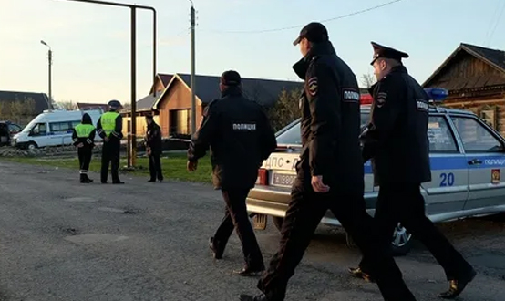

Единичное преступление
Уголовный кодекс выделяет единичные преступления и множественность преступлений.
Единичное преступление — это деяние, которое содержит состав одного преступления, квалифицируемого по одной статье УК РФ или ее части.
Такое деяние может быть простым или сложным.
Простое единичное преступление посягает на один объект, состоит из одного действия или бездействия, совершается с одной формой вины, полностью охватывается признаками одного состава и квалифицируется по одной статье особенной части УК (например, умышленное причинение тяжкого вреда здоровью — ст. 112 УК РФ).
Сложное единичное преступление состоит из ряда тождественных или разнородных действий, которые, тем не менее, квалифицируется по одной статье УК РФ. Сложные единичные преступления, в свою очередь, делятся на:
- длящиеся (совершаемые в течение продолжительного времени с непрерывным осуществлением состава конкретного преступления, например, дезертирство (ст. 338 УК РФ)),
- продолжаемые (ряд тождественных деяний с внутренней логикой, направленных на одну цель и объединенных единым умыслом, например, систематические хищения работником завода запчастей для сборки конкретного аппарата для собственных нужд),
- составные (выполнение двух или нескольких действий, которые в отдельности образуют сами по себе самостоятельное преступление, но в силу их внутреннего единства объединяются в один состав преступления, например, разбой, который включает попытку открытого похищения имущества и причинение насилия (или его угрозы), опасного для жизни и здоровья потерпевшего. Каждое из этих действий образует самостоятельный состав преступления, но вместе они образуют одно составное преступление и квалифицируются по одной статье, т.е. как разбой, а не множественность),
- с несколькими альтернативными действиями (например, для привлечения к ответственности по ч. 1 ст. 234 УК РФ за незаконное изготовление, переработку, приобретение, хранение, перевозку или пересылку в целях сбыта, а равно незаконный сбыт сильнодействующих или ядовитых веществ достаточно совершения одного из указанных деяний),
- с дополнительными тяжкими последствиями (одно действие, в результате которого могут наступить одно или несколько преступных последствий, например, незаконное помещение лица в психиатрический стационар, повлекшее по неосторожности смерть потерпевшего или иные тяжкие последствия).
Множественность преступлений
Множественность преступлений подразумевает совершение не менее двух преступлений, квалифицируемых по разным статьям УК РФ.
В отличие от единичных сложных преступлений, множественность преступлений характеризуется следующими признаками:
а) совершение одним и тем же лицом двух или более преступлений;
б) совершенное лицом преступное деяние образует самостоятельный состав преступления;
в) сохранение уголовно-правовых последствий за каждым из образующих множественность преступлений, т.е. включение лишь таких преступлений, по которым не исключается возможность привлечения к уголовной ответственности виновного (например, лицо не освобождается от ответственности за одно из преступлений, образующее их множественность в результате истечения срока давности, погашения судимости и т.д.).
Множественность является обстоятельством, усиливающим уголовную ответственность ввиду повышенной степени общественной опасности лица, совершившего несколько преступных деяний. Наказание при наличии множественности преступлений назначается отдельно за каждое деяние, после чего определяется единая окончательная мера наказания.
Формы множественности
В теории уголовного права выделяют такие формы множественности, как совокупность преступлений, рецидив, повторность, преступный промысел и преступная деятельность. Однако действующий УК РФ закрепляет лишь совокупность преступлений и рецидив преступлений.
Совокупность преступлений
ЦИТАТА
Совокупностью преступлений признается совершение двух или более преступлений, ни за одно из которых лицо не было осуждено, за исключением случаев, когда совершение двух или более преступлений предусмотрено статьями Особенной части УК РФ в качестве обстоятельства, влекущего более строгое наказание.
При совокупности преступлений лицо несет уголовную ответственность за каждое совершенное преступление по соответствующей статье или части статьи УК РФ.
Выделим отличительные признаки совокупности преступлений:
- наличие двух или более преступлений. Это означает, что каждое из совершенных деяний является самостоятельным преступлением;
- по преступлениям, образующим совокупность, не погашены юридические последствия и нет процессуальных препятствий для возбуждения уголовного дела (отсутствуют обстоятельства, исключающие множественность преступлений);
- преступления, образующие совокупность, совершены до осуждения за любое из них.
Совокупность бывает реальной или идеальной.
Реальная совокупность преступлений — это совершение двух или более самостоятельных преступлений, при условии, что ни за одно из них лицо не было осуждено.
Число деяний при реальной совокупности соответствует числу преступлений: два деяния — два преступления, три деяния — три преступления и так далее. Каждое из преступных деяний, входящих в реальную совокупность преступлений, совершается самостоятельным действием или бездействием (например, виновный совершает грабеж чужого имущества – ст. 161 УК РФ, а затем изнасилование – ст. 131 УК РФ). Реальная совокупность характеризуется разновременным совершением преступных деяний, т.е. одно из них является первым по времени совершения, а все последующие за ним – повторными.
Нет реальной совокупности, если в отношении первого преступного деяния истек срок давности привлечения к уголовной ответственности. Например, лицо, совершившее изнасилование, не может быть привлечено за совершение грабежа, по которому истек срок давности, как за совокупность преступлений. В данном случае лицо привлекается к уголовной ответственности только за изнасилование.
Идеальной совокупностью преступлений признается одно действие (бездействие), содержащее признаки двух и более составов преступлений.
Одно преступление, в таком случае, вызывает несколько вредных последствий, что не охватывается одной статьей. Например, совершеннолетнее лицо вступает в половое сношение с лицом, заведомо не достигшим 16-летнего возраста, и заражает его попутно венерическим заболеванием, заведомо зная о своей болезни. Идеальная совокупность преступлений, в отличие от реальной, не образует их повторения.
Нельзя смешивать понятие совокупности преступлений с понятием конкуренции уголовно-правовых норм. При совокупности виновный совершает два или более преступлений, каждое из которых образует самостоятельный состав, а при конкуренции норм одно и то же преступление подпадает под действие двух или более уголовно-правовых норм. Например, ст. 285 УК РФ (злоупотребление должностными полномочиями) является общей по отношению к ст. 292 УК РФ (служебный подлог) — она охватывает все случаи злоупотребления должностными полномочиями. Вторая норма по отношению к первой является специальной, предусматривающей ответственность за определенную разновидность предусмотренных в общей норме преступлений. В связи с этим, если преступление предусмотрено общей и специальной нормами, совокупность преступлений отсутствует, и уголовная ответственность наступает по специальной норме.
Исследователи дают также следующую классификацию совокупности преступлений:
1) общая совокупность — имеет место, когда лицо совершает два или более преступления, которые между собой не имеют связи, за исключением связи по субъекту;
2) специальная совокупность — характеризуется наличием связи между преступлениями. Этот вид включает в себя несколько подвидов:
- совершение лицом двух и более преступлений, которые объединены общей целью (преступным результатом). В таких случаях совершение одного преступления без совершения второго преступления бессмысленно для виновного, оно часто служит способом облегчения совершения другого преступления;
- совершение лицом двух или более преступлений, когда одно из них совершено, чтобы облегчить совершение другого преступления; с целью скрыть другое преступление; с целью скрыть свою причастность к другому преступлению; с целью предотвратить предполагаемое и (или) подавить оказываемое противодействие другому преступлению, а равно по мотиву мести за оказанное противодействие при совершении другого преступления;
- совершение лицом двух или более однородных, в том числе тождественных, преступлений. В таких случаях преступления также имеют внутренние связи, которые могут выражаться в общности мотивов и (или) целей, а также в однотипности обстоятельств совершения преступлений.
Совокупность преступлений является отягчающим ответственность обстоятельством. При этом реальная совокупность, как правило, более общественно опасна, чем идеальная. В соответствии с Инструкцией по регистрации и учету совершенных преступлений, образующие реальную совокупность преступления учитываются каждое самостоятельно, а при идеальной совокупности в статистических учетах регистрируется только наиболее тяжкое из входящих в такую совокупность преступлений.
Рецидив преступлений
ЦИТАТА
Рецидивом преступлений признается совершение умышленного преступления лицом, имеющим судимость за ранее совершенное умышленное преступление.
Рецидив преступлений отличается от совокупности тем, что новое преступление совершается уже после того, как были приняты предусмотренные законом меры за предыдущие.
Выделяют три вида рецидива:
- простой — при совершении любого умышленного преступления лицом, имеющим судимость за ранее совершенное умышленное преступление (ч. 1 ст. 18 УК РФ) при условии, если оно не относится к категории небольшой тяжести;
- опасный — а) при совершении лицом тяжкого преступления (например, разбоя), за которое оно осуждается к реальному лишению свободы, если ранее это лицо два или более раза было осуждено за умышленное преступление средней тяжести (например, грабежа) к лишению свободы; б) при совершении лицом тяжкого преступления, если ранее оно было осуждено за тяжкое или особо тяжкое преступление (например, убийство) к реальному лишению свободы;
- особо опасный — а) при совершении лицом тяжкого преступления, за которое оно осуждается к реальному лишению свободы, если ранее это лицо два раза было осуждено за тяжкое преступление к реальному лишению свободы; б) при совершении лицом особо тяжкого преступления, если ранее оно два раза было осуждено за тяжкое преступление или ранее осуждалось за особо тяжкое преступление.
При признании рецидива преступлений не учитываются:
а) судимости за умышленные преступления небольшой тяжести (например, причинение легкого вреда здоровью);
б) судимости за преступления, совершенные лицом в возрасте до восемнадцати лет;
в) судимости за преступления, осуждение за которые признавалось условным либо по которым предоставлялась отсрочка исполнения приговора, если условное осуждение или отсрочка исполнения приговора не отменялись и лицо не направлялось для отбывания наказания в места лишения свободы, а также судимости, снятые или погашенные.
В соответствии с ч. 5 ст. 18 УК РФ, рецидив преступлений влечет более строгое наказание: согласно ст. 68 УК РФ, срок наказания при любом виде рецидива преступлений не может быть менее одной третьей части максимального срока наиболее строгого вида наказания, предусмотренного за совершенное преступление, но в пределах санкции соответствующей статьи Особенной части УК РФ. Также рецидив преступлений, в соответствии с п. «а» ч. 1 ст. 63 УК РФ, признается обстоятельством, отягчающим наказание. Однако необходимо отметить, что при наличии исключительных обстоятельств дела имеется возможность назначения и при рецидиве преступлений более мягкого наказания, чем предусмотрено за конкретное преступление (ст. 64 УК РФ).